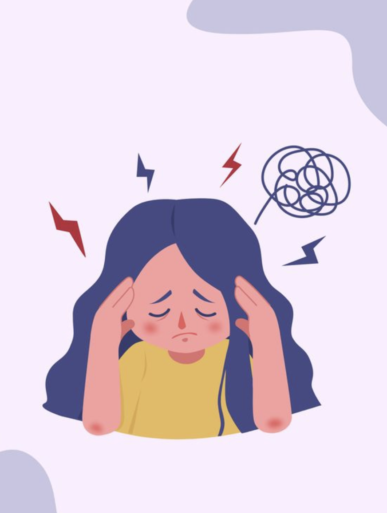

אם הראש שלך עובד שעות נוספות, וכל מחשבה מתגלגלת בלי הפסקה – את לא לבד. זה קורה להרבה מאיתנו, וזה בסדר לנוח. 💗
לפעמים מרגיש לי שאני חושבת על כל דבר… כל דבר! אפילו דברים קטנים ממשיכים להסתובב לי בראש. למה זה קורה?
כשאנחנו בלחץ, או מפחדות לטעות, המוח מנסה לנתח כל דבר לעומק. לפעמים אנחנו מרגישות שזה מגן עלינו – אבל בפועל זה מתיש אותנו יותר.
✨ אם הראש עובד בלי הפסקה – אולי הוא רק מבקש רגע שקט. תקשיבי לו בעדינות.
🎥 סרטון קצר (באנגלית) עם טכניקות פשוטות להרגיע את הראש.
קרה לך שחשבת בלי סוף ביומיים האחרונים?
כל מחשבה תחלוף, כל רגש משתנה. קחי אוויר... את חזקה יותר מהבלגן שבראש 🌸
חזרה למוח 🧠